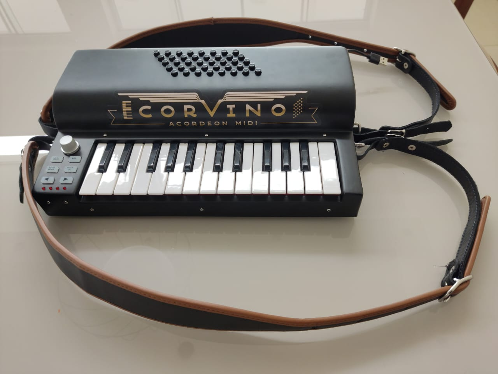

Manual do Corvino RC1
Referência completa dos controles do painel · ~5 minutos


Os controles, um por um
Um encoder giratório sem limite. Gira pra direita ou pra esquerda o quanto quiser.
No curso, esse knob não controla nada — o volume e os timbres você ajusta pelos controles do próprio app Corvino (volume e seletor de timbre na tela).
💡 O knob envia comandos MIDI (Control Change) que só fazem sentido em softwares avançados (DAWs como FL Studio, Ableton, Reaper), onde você pode mapeá-lo pra qualquer parâmetro — volume de uma faixa, corte de filtro, etc. Pro curso, pode ignorar.
Alterna as 25 teclas brancas e pretas entre modo nota (o padrão — cada tecla toca uma nota musical) e modo CC (cada tecla envia um comando de controle).
Segura o botão pra adicionar vibrato (aquele tremolo natural da voz humana) nas notas que você está tocando. Solta o botão, o som volta ao normal.
É muito usado em acordes longos — por exemplo, no final de uma valsa quando você segura a última nota.
Dois botões que deslizam a afinação da nota:
- PITCH DOWN: afina pra baixo (a nota cai meio tom enquanto você segura)
- PITCH UP: afina pra cima (a nota sobe meio tom enquanto você segura)
Solta, a afinação volta sozinha ao normal. É o mesmo efeito da alavanca "whammy" de guitarra — dá emoção em notas longas.
💡 Use com moderação. Pitch bend em toda nota soa desafinado — o charme está em usar pontual.
Muda a faixa de notas do teclado sem você ter que trocar de tecla. Cada toque em ► sobe uma oitava (as mesmas notas ficam mais agudas). Cada toque em ◄ desce uma oitava.
Os 4 LEDs vermelhos mostram a oitava atual:
- 0 LED aceso → oitava padrão (centro do teclado do piano)
- 1 LED → ±1 oitava
- 2 LEDs → ±2 oitavas
- 3 LEDs → ±3 oitavas (limite)
Pressione ◄ e ► juntos pra voltar direto pra oitava padrão.
💡 No curso, você vai estudar na oitava padrão quase sempre. Só mude se a peça pedir notas muito agudas ou muito graves que saem do teclado.
Conectando ao computador
O RC1 usa um cabo USB tipo A (o conector retangular comum, igual a um pen-drive). Uma ponta no Corvino, outra no computador. O Windows reconhece automático como dispositivo MIDI — sem driver, sem instalação.
Teste rápido: abra o app Corvino do curso. Se aparecer um ponto verde na marca "MIDI", tá conectado.
Problemas comuns
"Não sai som"
- O LED do Corvino acende ao conectar o USB? Se não, troque o cabo.
- No app do curso, aparece ponto verde em MIDI? Se não, desconecte e reconecte o USB.
- Aperte o knob pra subir volume — pode estar no mínimo.
- No Windows, confira o Mixer de Volume — o app Corvino pode estar mudo.
"Teclas tocam notas estranhas"
- O botão CC MODE pode ter sido apertado. Aperte de novo pra desligar.
- Confira a oitava — pressione ◄ e ► juntos pra voltar ao padrão.
"O computador não acha o Corvino"
- Tente outra porta USB (de preferência uma direta na placa-mãe, não no hub).
- Reinicie o computador com o Corvino conectado.
- Se persistir, acesse a aula Extra de Otimização pra rever as configurações de áudio.